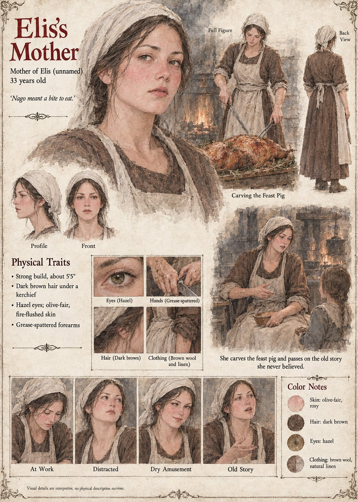

Elis's Mother
Mother of Elis · unnamed · Solan's Fire in the thirty-ninth year · 33 years old by her sheet
She is carving the pig. On the twenty-eighth of Havren, in the thirty-ninth year, at the evening feast of Solan's Fire in Vilarnau, her daughter Elis, six, has been given a small dish of roasted nago with salt by her great-grandmother and told that it is the gift of the gods; she eats it, considers the matter, and asks her mother what the word means and whether it has always been the name of the thing. Her mother, who is busy, says that it means a bite to eat, and that it is a funny old word and nobody knows where it came from. The girl says that it is a funny word for a locust. Her mother says that it is a funny sort of locust.
Then, because the child is still looking at her with the large grave attention of a person who has been given part of an answer and wishes for the rest, she says the one thing she was told by her own mother, who was told it by someone who was told it by a girl called Gersenda, and that she has never believed: that it is a foreign word, given to the valley by a man who once came in from very far away, and was made welcome, and, this being the part that nobody in the family has ever been able to believe, went home. The manuscript gives her a pig, a knife and a daughter. The sheet's thirty-three years, strong five-foot-five build, oval flushed face, dark brown hair under a kerchief, hazel eyes, grease-spattered forearms and linen apron are its own, and so is the line it prints beside her, Nago meant a bite to eat.